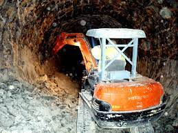

Un procedimiento para desmantelar un horno (1) que tiene una estructura refractaria de múltiples capas que tiene:una cubierta (61) exterior; una capa (52A, 62A) que contiene amianto que está formada en un material refractario que contiene amianto y cubre un lado interior de la cubierta exterior; y una capa (42B, 52B, 62B) que no contiene amianto,de múltiples capas, que está formada en un material refractario que no contiene amianto y cubre un lado interior de la capa que contiene amianto, en el que el procedimiento comprende: un desmantelamiento (S13) primario; y un desmantelamiento(S15) secundario realizado después del desmantelamiento primario, en el que en el desmantelamiento primario, la capa que no contiene amianto es desmantelada desde un lado de núcleo del horno de la misma, pero al menos una capa (523, 623) más exterior de entre las capas que forman la capa que no contiene amianto, así como la capa que contiene amianto, se dejan como un remanente (52C, 62C)de manera que no se requiere ninguna medida (S51-S56) para la manipulación de amianto, y en el desmantelamiento secundario, el remanente es desmantelado mientras se implementan medidas contra el amianto.
La presente invención se refiere a un procedimiento de desmantelamiento de un horno que tiene una estructura refractaria de múltiples capas. La presente invención puede ser usada para desmantelar un horno que tiene una estructura refractaria de múltiples capas en la que una pared interior del horno esta formada, en parte, de un material refractario que contiene amianto.
Tipicamente, se ha usado un horno que tiene una estructura refractaria de múltiples capas, en la que un material refractario, tal como ladrillos refractarios, es colocado en capas sobre el lado interior de una cubierta exterior (cubierta del horno) de hierro, de manera que el horno exhibe resistencia a un intenso calor en el mismo.
Un horno de este tipo, que tiene una estructura refractaria de múltiples capas, ha sido usado como un alto horno, un horno no ferroso, un horno de vidrio, un horno con inyección de aire caliente para suministrar aire caliente a estos hornos,un horno de recocido de equipo de procesamiento continuo para una placa delgada o un horno de calentamiento para calentar diversos materiales de acero.
Como un ejemplo de un horno que tiene una estructura refractaria de múltiples capas, se hara una descripción de un horno con inyección de aire caliente para suministrar aire caliente para un alto horno.
Un horno con inyección de aire caliente incluye un horno con inyección de aire caliente de combustión interior y un horno con inyección de aire caliente de combustión exterior. Un horno con inyección de aire caliente de combustión interior tiene una parte de combustión y una parte de acumulación de calor integralmente alojada en su interior (por ejemplo, literatura de patente 1). Un horno con inyección de aire caliente de combustión exterior tiene cuerpos de horno separados que funcionan respectivamente como una parte de combustión y una parte de acumulación de calor, que estan conectados entre si en sus extremos superiores a través de un tubo de conexión (por ejemplo, literatura de patente 2 y la literatura de patente 3).
En cualquiera de los tipos, el gas de combustión, que tiene temperatura alta, es generado en la parte de combustión con la ayuda de un quemador, y es pasado a través de la parte de acumulación de calor para acumular el calor.Cuando se acumula una cantidad suficiente de calor, el aire se hace pasar en sentido inverso a través de la parte de acumulación de calor,generando, de esta manera, un chorro de aire caliente (por ejemplo, literatura de patente 4).
La pared de horno del horno con inyección de aire caliente se forma colocando un material refractario, tal como ladrillos refractarios, sobre el lado interior de una cubierta exterior (cubierta del horno) de hierro, de manera que la pared del horno exhibe resistencia a un intenso calor en el mismo. Los ladrillos refractarios de la pared del horno se colocan en capas hacia un núcleo del horno, de manera que el espesor de la pared del horno se aumenta para asegurar una resistencia al calor para una parte específica. Otros materiales refractarios usados para la pared del horno son ladrillos o placas termoaislantes colocados entre los ladrillos refractarios y la cubierta del horno y un material de revestimiento termoaislante pulverizado sobre la superficie interior de la pared del horno.
En un horno con inyección de aire caliente de combustión interior, la parte de combustión y la parte de acumulación de calor estan rodeadas por la pared del horno formada tal como se ha descrito anteriormente. Un tabique formado en un material refractario es proporcionado entre la parte de combustión y la parte de acumulación de calor.
En un horno con inyección de aire caliente de combustión exterior, cada uno de los cuerpos de horno, que funcionan respectivamente como la parte de combustión y la parte de acumulación de calor, esta provisto de la pared de horno indicada anteriormente que tiene materiales refractarios.
Ladrillos de acumulación de calor, como un material refractario de acumulación de calor, se rellenan en la parte de acumulación de calor del horno con inyección de aire caliente de combustión interior o en el cuerpo de horno como la parte de acumulación de calor del horno con inyección de aire caliente de combustión exterior. Dichos ladrillos de acumulación de calor, que se caracterizan por tener poros y una gran capacidad calorífica,son un material refractario básicamente similar a los ladrillos refractarios, y vienen ejemplificados por los ladrillos “gitter” hexagonales-columnares (por ejemplo, literatura de patente 5).
Un horno con inyección de aire caliente esta destinado a tener una durabilidad de décadas. Sin embargo, debido a que el funcionamiento del horno con inyección de aire caliente esta acompañado por el deterioro de los materiales refractarios en el mismo, el horno con inyección de aire caliente requiere el desmantelamiento de los materiales refractarios desgastados en su interior para su renovación. Los materiales refractarios a ser desmantelados incluyen los materiales refractarios usados para la pared del horno y el tabique (si el horno es de tipo combustión interior) y el material refractario usado como el material de acumulación de calor. Es necesaria una operación a gran escala usando equipo pesado para desmantelar estos materiales refractarios.